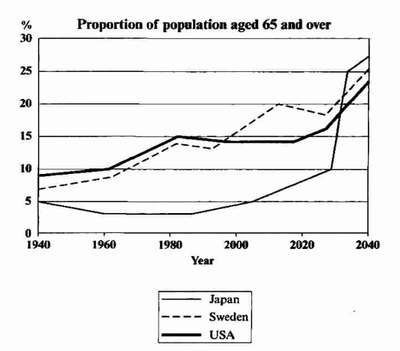

You should spend about 20 minutes on this task.
The graph below shows the proportion of the population aged 65 and over between 1940 and 2040 in three different countries.
Summarise the information by selecting and reporting the main features and make comparisons where relevant.
Write at least 150 words.

The line graph compares the percentage of people aged 65 or more in three countries over a period of 100 years.
It is clear that the proportion of elderly people increases in each country between 1940 and 2040. Japan is expected to see the most dramatic changes in its elderly population.
In 1940, around 9% of Americans were aged 65 or over, compared to about 7% of Swedish people and 5% of Japanese people. The proportions of elderly people in the USA and Sweden rose gradually over the next 50 years, reaching just under 15% in 1990. By contrast, the figures for Japan remained below 5% until the early 2000s.
Looking into the future, a sudden increase in the percentage of elderly people is predicted for Japan, with a jump of over 15% in just 10 years from 2030 to 2040. By 2040, it is thought that around 27% of the Japanese population will be 65 years old or more, while the figures for Sweden and the USA will be slightly lower, at about 25% and 23% respectively.
(178 words, band 9)
Structure - 4 paragraphs: introduction, overview, 2 specific details
Paraphrasing - proportion of the population = percentage of people (find more examples)
Overview - overall trend, then biggest change
Selecting key information - first year (1940), middle years (1990, early 2000s), end of period (2030 to 2040)
Comparing - in each country, most dramatic, and, compared to, by contrast, while, slightly lower, respectively (analyse my sentences to learn how to use these words correctly)
Verbs - compares, increases, is expected to see, were, rose, remained... (look carefully at the use of tenses)
Introduction: write one sentence to introduce what the graph shows. Just paraphrase the question statement (i.e. change a few words).
Summary: describe 2 main things e.g. the overall trend for all 3 countries, and the biggest change that you can see.
Details: compare all 3 countries in 1940, then in 1990.
Details: describe the dramatic increase predicted for Japan, and compare all 3 countries in 2040.
You should spend about 40 minutes on this task.
Due to the development and rapid expansion of supermarket in some countries, many small, local business are unable to compete. Some people think that the closure of local business will bring about the death of local communities.
To what extent do you agree or disagree?
Give reasons for your answer and include any relevant examples from your own knowledge or experience.
Write at least 250 words.
Nowadays a lot of large business such as supermarkets have been improved fastly and have become widespread in the world, therefore a lot of small business have affected and lost the ability to rival. Large number of people believe that closing like these small business will impact negatively and might destroy the local communities.
Firstly, small business play an important function in keeping the economy of local communities safe. In fact,local communities are vital because a lot of factories rely on to sell their products thus without these small business,large number of factories will be threaten to close as a result a lot workers might lose their jobs and lead to increase the idleness. For example,in some Mediterranean countries they are completely depend on a small business.In addition,there is a study says that roughly 80% percent of a people tend to buy their requirement such as foods and vegetables from small supermarkets because they found them cheaper than large supermarkets therefore without these local business the standard of the life would be very expensive and a people can not afford it.
Secondly, absence of local businesses will make the life very complicated for the people who life in a countryside areas.Moreover, in many Mediterranean countries,most people live in cities consequently large supermarkets not exist in a countryside as a result the people who live there buy their need from the the small supermarkets consequently we can not imagine our life without these small supermarket.
In conclusion,despite large supermarkets are important in our life since there are comprehensive and supply us with our need, however small supermarkets are also important and we have support them.
(Written by yaman magmomh)
(Band 5.0)
Corrected Essay
Nowadays , a lot of many large business such as supermarkets have been improved fastly and have become widespread in the world , therefore .Therefore, a lot of various small business es have affected and lost the ability to rival are put in a relentless competition . A Large number of people believe that the closing off like of these small business es will impact negatively and might destroy the local communities.
Avoid using “ a lot of ” in a formal context. The reason: “ A lot of ” is counted as 3 words, while “ many ” is counted as only 1 word. A good writer is expect to be able to write with fewer words, but still convey the same meaning.
You may think that using “ a lot of ” helps you reach the 250 words target faster, but the IELTS examiners are savvy enough to know those pathetic tricks. Therefore, just avoid using it.
“Business” is a countable noun, so you have to use “ businesses ” whenever necessary.
The author has failed to state his opinion in the introduction. Okay, some people believe that *whatever the crap*, but what is the author’s belief? This kind of mistake will reduce your score in Task Response criterion.
Firstly, small business es play serve an important function in keeping the economy of local communities safe stable . In fact, local communities are vital because a lot of many factories rely on them to sell their products thus . Thus, without these small business es , a large number of factories will be threaten to close be closed as . As a result , a lot numerous workers might lose their jobs and lead to increase the idleness become the social burden . For example, in some Mediterranean countries , they the local people are completely depend on a small business es . In addition, there is a study says that roughly 80% percent of a people tend to buy their requirement necessity goods such as foods and vegetables from small supermarkets , because they found them cheaper than that of large supermarkets . therefore Therefore, without these local business es, the standard of the life living standard would be very expensive and a people can not afford it.
The author tends to write very long sentences. Break them down into smaller pieces. And don’t forget to place a comma after a connective (for example, “as a result”).
Avoid writing stuff like “there is a study says that” . Which study are you referring on? In the IELTS exam, you cannot provide references for your evidence, unlike in a university thesis. Just stating statistics without any claim will lower your Coherence & Cohesion score.
Remember to use the plural form of a noun when necessary. And articles too.
Secondly, the absence of local businesses will make the life very complicated for the people who life live in a countryside areas. Moreover, in many Mediterranean countries, most people live in cities consequently . Consequently, large supermarkets not exist in a countryside . as As a result , the people who live there buy their need from the the small supermarkets consequently . Consequently, we can not imagine our life without these small supermarket.
The idea of “less small businesses means a rougher life for rural citizens” is already expressed in the previous body paragraph. So this section is irrelevant.
The author does not success in conveying his notion. There are some repetitions (“ consequently ”) and some ambiguous sentences.
In conclusion, despite although large supermarkets are important in our life since there are comprehensive and they supply us with our need, however small supermarkets are also important and we have to support them.
In the previous sections, the author has not stated the importance of large supermarkets. Therefore, using that idea here results in a weak conclusion.
Avoid using unneed subject such as “ we ”, or “ the government ”. Instead of writing “ we have to support them ”, change the phrase into passive voice, for example, “ they need supporting ”. More concise is always better.
Words: 280
Overall: 5.0
Task Response: 5
✓ addresses the task only partially; the format may be inappropriate in places (due to the unclear introduction)
✓ expresses a position but the development is not always clear and there may be no conclusions drawn
✓ presents some main ideas but these are limited and not sufficiently developed; there may be irrelevant detail (the second body paragraph is just a paraphrase from the first one)
Coherence and Cohesion: 5
✓ presents information with some organisation but there may be a lack of overall progression ( due to the underdeveloped second body paragraph)
✓ makes inadequate, inaccurate or over use of cohesive devices (the author used “as a result”, “thus”, “consequently” too many times)
✓ may be repetitive because of lack of referencing and substitution
✓ may not write in paragraphs, or paragraphing may be inadequate
Lexical Resource: 5
✓ uses a limited range of vocabulary, but this is minimally adequate for the task (the author failed to use appropriate words such as “necessity goods” , or “living standard” )
✓ may make noticeable errors in spelling and/or word formation that may cause some difficulty for the reader ( close closing off )
Grammatical Range and Accuracy: 5
✓ uses only a limited range of structures (inability to effectively use phrasal nouns)
✓ attempts complex sentences but these tend to be less accurate than simple sentences
✓ may make frequent grammatical errors and punctuation may be faulty; errors can cause some difficulty for the reader (the lack of commas makes it hard to read the essay)